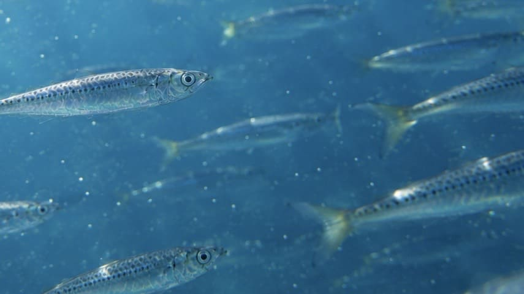
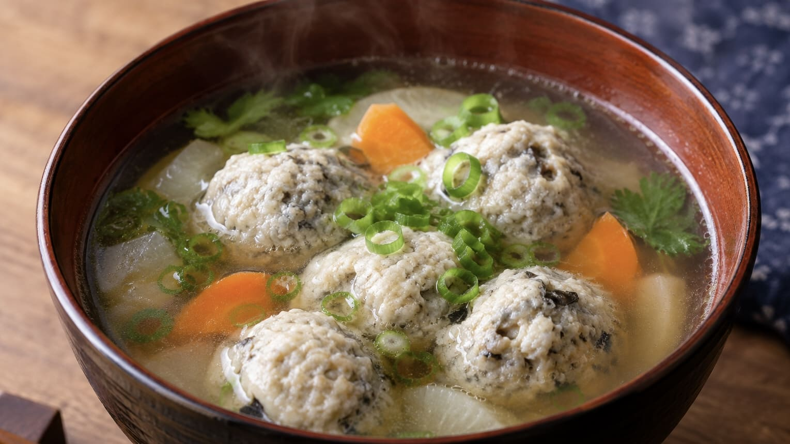

【完全版】ただの小魚じゃない！海を支える「イワシ」の生態・釣り方・食文化ガイド

身近な大衆魚の代表格として、私たちの食卓にもおなじみの「イワシ」。防波堤に行けばファミリーフィッシングで大漁に釣れる人気のターゲットです。しかし、実は「イワシ」という名前の単一の魚は存在しないことをご存知でしょうか？日本で釣りの対象となる代表的なイワシは、主に以下の3種類に分類されます。
- マイワシ：体側に黒い斑点が並ぶのが最大の特徴。最大30cmほどと比較的大型に成長し、食味も抜群です。地方によってはオオバイワシやヒラゴとも呼ばれます。
- カタクチイワシ：下あごが短く、口が大きく開くのが特徴。最大15cmほどで、サビキ釣りで鈴なりに釣れる代表格です。シコイワシ、セグロ、タレクチといった数多くの地方名で親しまれています。
- ウルメイワシ：目が大きく、体が細長いスマートな体型。最大25cmほどになり、脂が多く非常に美味なイワシです。
1. 【トリビア】なぜイワシはあんなに巨大な群れを作るのか？
イワシは一匹一匹が強い魚ではありません。そのため、巨大な群れを作ることで捕食者に狙われにくくする防衛戦略をとっています。
しかし、皮肉なことにこの大群は、サバやブリ、マグロなどの大型魚、さらには鳥やイルカたちに「ここに大量のエサがあるぞ！」と知らせる目印にもなってしまいます。海面でイワシが逃げ惑い、鳥が突っ込み、青物が水面を割る激しい現象は、イワシの群れが引き起こす海のドラマです。
2. イワシの釣り方攻略：堤防サビキ＆究極の食物連鎖フィッシング
① 手軽で最強！「サビキ釣り」のコツ
湾内の岸近くや堤防に群れが回遊してきたら、サビキ釣りの大チャンスです。ここで絶対に意識すべきは「タナ（泳層）」です。同じポイントに様々な魚がいても、アジが底付近、サバが中層を泳ぐのに対し、イワシは最も「上層」を回遊するのが基本パターンです。
通常のサビキ仕掛けでも十分に釣れますが、アミコマセを専用ケースで直接針にこすりつける「トリック仕掛け」を使うと、さらに圧倒的な釣果を叩き出すことができます。
② イワシをエサにする「泳がせ釣り」
釣り人にとって、「イワシの群れがいる＝それを食べる大型魚（フィッシュイーター）がいる」という強力なヒントになります。
釣ったばかりの活きのいいイワシをそのまま針に掛け、海へ泳がせてヒラメ、マゴチ、スズキ、青物などを狙う「泳がせ釣り（のませ釣り）」は最高にスリリングです。※ただし、カタクチイワシに混じって釣れる「トウゴロウイワシ」はウロコが硬くエサには不向きなので注意しましょう。
3. 「足が早い」からこそ発達した、奥深き日本のイワシ食文化

イワシは身が柔らかく脂が多い上、内臓の酵素による自己消化が激しいため、非常に「傷みやすい（足が早い）」魚です。冷蔵技術がなかった時代、大量に獲れるイワシをいかに保存するかという課題から、日本全国で驚くほど多種多様な加工文化が生まれました。- 江戸時代の農業を支えたイワシ：千葉県の九十九里などでは、食用だけでなく「干鰯（ほしか）」や「〆粕」に加工され、肥料として全国に出荷されていました。イワシは魚食だけでなく、日本の農業や生活そのものを支えていたのです。
- 全国の絶品郷土料理：
- せぐろいわしのごま漬け（千葉）：塩漬けにしたカタクチイワシをゴマや柚子と酢漬けにした保存食。
- こんかいわし（石川）：塩漬けにしたイワシを米ぬか（こんか）に漬けて発酵させ、脂の酸化を抑えつつ独特の旨味を引き出した熟成食品。
- うの花きずし / 唐ずし（山口）：シャリの代わりに「おから」を使い、酢締めしたイワシを包む生活の知恵から生まれたお寿司。
- 自家製アンチョビも作れる：イタリア料理でおなじみのアンチョビも、実はカタクチイワシを塩漬けにしてオリーブオイルに漬けたもの。釣れたイワシで簡単に自作できます。
4. 釣り人の特権「七度洗えば鯛の味」
昔からイワシの美味しさを表現する言葉に「七度洗えば鯛の味」というものがあります。これは、身の脂や特有の臭みを流水で丁寧に洗い流すことで、鯛にも匹敵するほどの極上の味わいになるという、先人たちの魚食文化の知恵です。
📍 関東の生息・釣果スポット
※マップ上の赤いドットが釣れるポイントです。